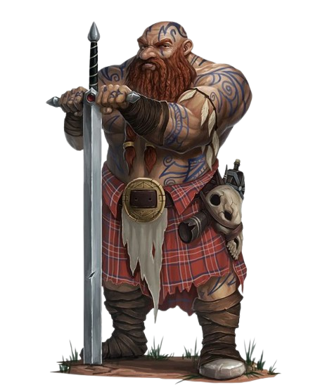

Nain

Description : Les nains sont des êtres robustes, travailleurs et dotés d’un fort sens de l’honneur. Ils vivent souvent sous terre, dans des forteresses taillées à même la roche. Leurs connaissances en forge, en artisanat et en combat sont inégalées. Ils ont également une forte résistance aux poisons et à l’alcool.
✅ Atout :
+1 en Constitution, résistance aux poisons (avantage aux jets de sauvegarde).
❌ Inconvénient :
-1 en Dextérité (les nains sont moins agiles que d'autres races).
Capacités
📜 Endurance et robustesse
- Niveau 3 : +1 en Constitution.
- Niveau 6 : Avantage sur les jets de sauvegarde contre poisons et maladies.
- Niveau 9 : Ignore les malus liés aux armures lourdes.
- Niveau 12 : Une fois par combat, peut réduire de moitié les dégâts d'une attaque.